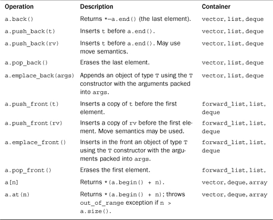
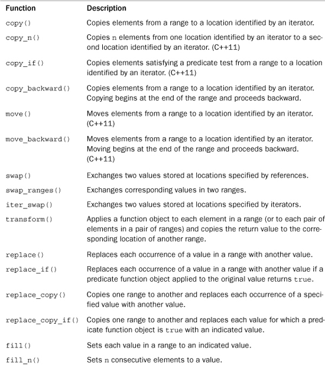
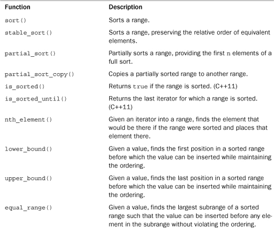

The Standard Template Library (STL) aims to provide efficient implementations of common algorithms. It expresses these algorithms in general functions that can be used with any container that satisfies the requirements for the particular algorithm and in methods that can be used with instantiations of particular container classes. This appendix assumes that you have some familiarity with the STL, such as might be gained from reading Chapter 16, “The string Class and the Standard Template Library.” For example, this chapter assumes that you know about iterators and constructors.
Just as the changes brought by C++11 to the C++ language are too extensive to cover completely in this book, so are the changes to the STL too extensive to cover completely in this appendix. However, we can summarize many of the additions.
C++11 brings several new elements to the STL. First, it adds several new containers. Second, it adds a few new features to the old containers. Third, it adds a few new template functions to its family of algorithms. All these changes are incorporated into this appendix, but you may find an overview of the first two categories helpful.
C++11 adds the following containers: array, forward_list, unordered_set, and the unordered associative containers unordered_multiset, unordered_map, and unordered_multimap.
An array container, once declared, is fixed in size and uses static or stack memory rather than dynamically allocated memory. It’s intended as a substitute for the built-in array type; it’s more limited than vector, but more efficient.
The list container is a bidirectional linked list, with each item, other than the two ends, linked to the item before it and the one after. The forward_list is a singly linked list, with each item, other than the last, linked to the next item. It provides a more compact, but more limited, alternative for list.
Like set and the other associative containers, the unordered associative containers allow fast data retrieval through the use of keys. The difference is that the associative containers use trees as the underlying data structure, whereas the unordered associative containers use hash tables.
C++11 brings three main changes to the container class methods.
First, the addition of rvalue references makes it possible to provide move semantics (Chapter 18, “Visiting with the New C++ Standard”) for containers. Accordingly, the STL now provides move constructors and move assignment operators for containers. These methods take an rvalue reference argument.
Second, the addition of the initializer_list template class (Chapter 18) has led to constructors and assignment operators that accept an initializer_list argument. This makes code like the following possible:
vector<int> vi{100, 99, 97, 98};
vi = {96, 99, 94, 95, 102};
Third, the addition of variadic templates and function parameter packs (Chapter 18) makes emplacement methods possible. What does this mean? Like move semantics, emplacement is a means to increase efficiency. Consider the following code snippets:
class Items
{
double x;
double y;
int m;
public:
Items(); // #1
Items (double xx, double yy, int mm); // #2
...
};
...
vector<Items> vt(10);
...
vt.push_back(Items(8.2, 2.8, 3)); //
The call to insert() causes the memory allocation function to create a default Items object at the end of vt. Next, the Items() constructor creates a temporary Items object; this object is copied to a location at the front of the vector vt and then the temporary object is deleted. With C++11, you can do this instead:
vi.emplace_back(8.2, 2.8, 3);
The emplace_back() method is a variadic template with a function parameter pack as its argument:
template <class... Args> void emplace_back(Args&&... args);
The three arguments 8.2, 2.8, and 3 are packed into the args parameter. These parameters are passed along to the allocation function, which then can unpack the parameters and use the Items constructor with three arguments (#2) instead of the default constructor (#1). That is, it can use Items(args...), which, in this example, expands to Items(8.2, 2.8, 3). Thus, the desired object is constructed in place in the vector rather than at a temporary location and then copied to the vector.
The STL uses this technique with several emplacement methods.
All containers define the types in Table G.1. In this table, X is a container type, such as vector<int>, and T is the type stored in the container, such as int. The examples following the table clarify the meanings.
Table G.1. Types Defined for All Containers
The class definition uses a typedef to define these members. You can use these types to declare suitable variables. For example, the following code uses a roundabout way to replace the first occurrence of "bonus" in a vector of string objects with "bogus" in order to show how you can use member types to declare variables:
using namespace std;
vector<string> input;
string temp;
while (cin >> temp && temp != "quit")
input.push_back(temp);
vector<string>::iterator want=
find(input.begin(), input.end(), string("bonus"));
if (want != input.end())
{
vector<string>::reference r = *want;
r = "bogus";
}
This code makes r a reference to the element in input to which want points. Similarly, continuing with the preceding example, you can write code like the following:
vector<string>::value_type s1 = input[0]; // s1 is type string
vector<string>::reference s2 = input[1]; // s2 is type string &
This results in s1 being a new string object that’s a copy of input[0] and in s2 being a reference to input[1]. In this example, given that you already know that the template is based on the string type, it would be simpler to write the following code, which is equivalent in its effect:
string s1 = input[0]; // s1 is type string
string & s2 = input[1]; // s2 is type string &
However, the more elaborate types from Table G.1 can also be used in more general code in which the type of container and element are generic. For example, suppose you want a min() function that takes as its argument a reference to a container and returns the smallest item in the container. This assumes that the < operator is defined for the value type used to instantiate the template and that you don’t want to use the STL min_element() algorithm, which uses an iterator interface. Because the argument could be vector<int> or list<string> or deque<double>, you use a template with a template parameter, such as Bag, to represent the container. (That is, Bag is a template type that might be instantiated as vector<int>, list<string>, or some other container type.) So the argument type for the function is const Bag & b. What about the return type? It should be the value type for the container—that is, Bag::value_type. However, at this point, Bag is just a template parameter, and the compiler has no way of knowing that the value_type member is actually a type. But you can use the typename keyword to clarify that a class member is a typedef:
vector<string>::value_type st; // vector<string> a defined class
typename Bag::value_type m; // Bag an as yet undefined type
For the first definition here, the compiler has access to the vector template definition, which states that value_type is a typedef. For the second definition, the typename keyword promises that, whatever Bag may turn out to be, the combination Bag::value_type is the name of a type. These considerations lead to the following definition:
template<typename Bag>
typename Bag::value_type min(const Bag & b)
{
typename Bag::const_iterator it;
typename Bag::value_type m = *b.begin();
for (it = b.begin(); it != b.end(); ++it)
if (*it < m)
m = *it;
return m;
}
You then could use this template function as follows:
vector<int> temperatures;
// input temperature values into the vector
int coldest = min(temperatures);
The temperatures parameter would cause Bag to be evaluated as vector<int> and typename Bag::value_type to be evaluated as vector<int>::value_type, which, in turn, is int.
All containers also contain the member functions or operations listed in Table G.2. Again, X is a container type, such as vector<int>, and T is the type stored in the container, such as int. Also a and b are values of type X, u is an identifier, r is a non-const value of type X, and rv is a non-const rvalue of type X. The move operations were added by C++11.
Table G.2. Operations Defined for All Containers
Containers that use a bi-directional or random iterator (vector, list, deque, queue, array, set, and map) are reversible and provide the methods in Table G.3.
Table G.3. Types and Operations Defined for Reversible Containers
The unordered set and unordered map containers are not required to support the optional container operations in Table G.4, but the remaining containers do support them.
Table G.4. Optional Container Operations
The > operator for a container assumes that the > operator is defined for the value type. A lexicographic comparison is a generalization of alphabetical sorting. It compares two containers, element-by-element, until it encounters an element in one container that doesn’t equal the corresponding element in the other container. In that case, the containers are considered to be in the same order as the noncorresponding pair of elements. For example, if two containers are identical through the first 10 elements, but the 11th element in the first container is less than the 11th element in the second container, the first container precedes the second. If two containers compare equally until one runs out of elements, the shorter container precedes the longer.
The vector, forward_list, list, deque, and array template classes are all sequence containers, and they all have the methods listed previously, with the exception that forward_list isn’t reversible and doesn’t support the methods of Table G.3. A sequence container, not surprisingly, holds a homogeneous set of items in linear order. If the sequence has a fixed number of elements, array is the usual choice. Otherwise, vector, which combines the random access of array with the ability to add and delete items should be your first recourse. However, if there are frequent additions in the middle of the sequence, consider using list or forward_list. And if additions and deletions primarily occur at the two ends of the sequence, consider deque.
The fixed size of an array object prevents array from using many of the sequence methods. Table G.5 lists additional methods available for sequence containers other than array. (forward_list has somewhat different definitions for resize().) Again, X is a container type, such as vector<int>, and T is the type stored in the container, such as int. a is a value of type X. t is an lvalue or const rvalue of type X::value_type. rv is a non-const rvalue of that same type. i and j are input iterators. [i, j) is a valid range. il is an object of type initializer_list<value_type>. p is a valid const iterator to a. q is a valid dereferenceable const iterator to a. [q1,q2) is a valid range of const iterators. n is an integer of X::size_type. Args is a template parameter pack, and args is a function parameter pack with the pattern Args&&.
Table G.5. Additional Operations Defined for Sequence Containers
Table G.6 lists methods common to some of the sequence classes (vector, forward_list, list, and deque).
Table G.6. Operations Defined for Some Sequences

The vector template additionally has the methods in Table G.7. Here, a is a vector container and n is an integer of X::size_type.
Table G.7. Additional Operations for Vectors
The list template additionally has the methods in Table G.8. Here, a and b are list containers, and T is the type stored in the list, such as int, t is a value of type T, i and j are input iterators, q2 and p are iterators, q and q1 are dereferenceable iterators, and n is an integer of X::size_type. The table uses the standard STL notation [i, j), meaning the range from i up to, but not including, j.
Table G.8. Additional Operations for Lists
The forward-list operations are similar. However, because a forward_list template class iterator can’t go backwards, some methods have to be adjusted. Thus, the insert(), erase(), and splice() methods are replaced with the insert_after(), erase_after(), and splice_after() methods, all of which operate on the position following an iterator position rather than preceding it.
Associative containers, of which sets and maps are models, have a Key template parameter and a Compare template parameter, which indicate, respectively, the type of the key used to order the contents and the function object, termed a comparison object, used to compare key values. For the set and multiset containers, the stored keys are the stored values, so the key type is the same as the value type. For the map and multimap containers, the stored values of one type (template parameter T) are associated with a key type (template parameter Key), and the value type is pair<const Key, T>. Associative containers have additional members to describe these features, as listed in Table G.9.
Table G.9. Types Defined for Associative Containers
Associative containers provide the methods listed in Table G.10. In general, the comparison object need not require that values with the same key be identical; the term equivalent keys means that two values, which may or may not be equal, have the same key. In the table, X is a container class, and a is an object of type X. If X uses unique keys (that is, is set or map), a_uniq is an object of type X. If X uses multiple keys (that is, is multiset or multimap), a_eq is an object of type X. As before, i and j are input iterators referring to elements of value_type, [i, j) is a valid range, p and q2 are iterators to a, q and q1 are dereferenceable iterators to a, [q1, q2) is a valid range, t is a value of X::value_type (which may be a pair), and k is a value of X::key_type. Also il is an initializer_list<value_type> object.
Table G.10. Operations Defined for Sets, Multisets, Maps, and Multimaps
As mentioned earlier, the unordered associative containers (unordered_set, unordered_multiset, unordered_map, and unordered_multimap) use keys and hash tables to provide rapid access to data. Let’s take a simple look at these concepts. A hash function converts a key to an index value. For example, if the key were a string, the hash function could sum the numeric codes for the characters in the string and take that sum modulus 13, thus giving an index in the range 0–12. The unordered container would use 13 buckets to store strings. Any string with, say, an index of 4 would be placed in bucket 4. If you wished to search the container for a key, you would apply the hash function to the key and just search the bucket with the corresponding index. Ideally, you would have enough buckets that each one would contain only a few strings.
The C++11 library provides a hash<Key> template that the unordered associative containers use by default. Specializations are defined for the various integer and floating-point types, for pointers, and for some template classes, such as string.
Table G.11 lists types used for these containers.
Table G.11. Types Defined for Unordered Associative Containers
The interface for the unordered associative containers is similar to that of the associative containers. In particular, Table G.10 also applies to the unordered associative containers with the following exceptions: The lower_bound() and upper_bound() methods are not required, nor is the X(i,j,c) constructor. The fact that the regular associative containers are ordered allows them to use a comparison predicate that expresses the “less than” concept. Such a comparison doesn’t apply to unordered associative containers, so, instead, they use a comparison predicate that is based on the “is equivalent to” concept.
In addition to the Table G.10 methods, the unordered associative containers require several more methods, as listed in Table G.12. In this table, X is an unordered associative container class, a is an object of type X, b is a possibly constant object of type X, a_uniq is an object of type unordered_set or unordered_map, a_eq is an object of type unordered_multiset or unordered_multimap, hf is a value of type hasher, eq is a value of type key_equal, n is a value of type size_type, and z is a value of type float. As before, i and j are input iterators referring to elements of value_type, [i, j) is a valid range, p and q2 are iterators to a, q and q1 are dereferenceable iterators to a, [q1, q2) is a valid range, t is a value of X::value_type (which may be a pair), and k is a value of X::key_type. Also il is an initializer_list<value_type> object.
Table G.12. Additional Operations Defined for Unordered Sets, Multisets, Maps, and Multimaps
The STL algorithm library, supported by the algorithm and numeric header files, provides a large number of nonmember, iterator-based template functions. As discussed in Chapter 16, the template parameter names are chosen to indicate what concept particular parameters should model. For example, ForwardIterator is used to indicate that a parameter should, at the minimum, model the requirements of a forward iterator, and Predicate is used to indicate a parameter that should be a function object with one argument and a bool return value. The C++ Standard divides the algorithms into four groups: nonmodifying sequence operations, mutating sequence operations, sorting and related operators, and numeric operations. (C++11 moves numeric operations from the STL to the numeric library, but that doesn’t affect how they are used.) The term sequence operation indicates that the function takes a pair of iterators as arguments to define a range, or sequence, to be operated on. The term mutating means the function is allowed to alter the container.
Table G.13 summarizes the nonmodifying sequence operations. Arguments are not shown, and overloaded functions are listed just once. A fuller description, including the prototypes, follows the table. Thus, you can scan the table to get an idea of what a function does and then look up the details if you find the function appealing.
Table G.13. Nonmodifying Sequence Operations
Now let’s take a more detailed look at these nonmodifying sequence operations. For each function, the discussion shows the prototype(s), followed by a brief explanation. Pairs of iterators indicate ranges, with the chosen template parameter name indicating the type of iterator. As usual a range in the form [first, last) goes from first up to, but not including, last. Some functions take two ranges, which need not be in the same kind of container. For example, you can use equal() to compare a list to a vector. Functions passed as arguments are function objects, which can be pointers (of which function names are an example) or objects for which the () operation is defined. As in Chapter 16, a predicate is a Boolean function with one argument, and a binary predicate is a Boolean function with two arguments. (The functions need not be type bool, as long as they return 0 for false and a nonzero value for true.)
all_of() (C++11)template<class InputIterator, class Predicate>
bool all_of(InputIterator first, InputIterator last,
Predicate pred);
The all_of() function returns true if pred(*i) is true for every iterator in the range [first,last) or if the range is empty. Otherwise the function returns false.
any_of() (C++11)template<class InputIterator, class Predicate>
bool any_of(InputIterator first, InputIterator last,
Predicate pred);
The any_of() function returns false if pred(*i) is false for every iterator in the range [first,last) or if the range is empty. Otherwise the function returns true.
none_of() (C++11)template<class InputIterator, class Predicate>
bool none_of(InputIterator first, InputIterator last,
Predicate pred);
The none_of() function returns true if pred(*i) is false for every iterator in the range [first,last) or if the range is empty. Otherwise the function returns false.
for_each()template<class InputIterator, class Function>
Function for_each(InputIterator first, InputIterator last,
Function f);
The for_each() function applies function object f to each element in the range [first, last). It also returns f.
find()template<class InputIterator, class T>
InputIterator find(InputIterator first, InputIterator last,
const T& value);
The find() function returns an iterator to the first element in the range [first, last) that has the value value; it returns last if the item is not found.
find_if()template<class InputIterator, class Predicate>
InputIterator find_if(InputIterator first, InputIterator last,
Predicate pred);
The find_if() function returns an iterator it to the first element in the range [first, last) for which the function object call pred(*i) is true; it returns last if the item is not found.
find_if_not()template<class InputIterator, class Predicate>
InputIterator find_if_not(InputIterator first, InputIterator last,
Predicate pred);
The find_if_not() function returns an iterator, it, to the first element in the range [first, last) for which the function object call pred(*i) is false; it returns last if the item is not found.
find_end()template<class ForwardIterator1, class ForwardIterator2>
ForwardIterator1 find_end(
ForwardIterator1 first1, ForwardIterator1 last1,
ForwardIterator2 first2, ForwardIterator2 last2);
template<class ForwardIterator1, class ForwardIterator2,
class BinaryPredicate>
ForwardIterator1 find_end(
ForwardIterator1 first1, ForwardIterator1 last1,
ForwardIterator2 first2, ForwardIterator2 last2,
BinaryPredicate pred);
The find_end() function returns an iterator it to the last element in the range [first1, last1) that marks the beginning of a subsequence that matches the contents of the range [first2, last2). The first version uses the == operator for the value type to compare elements. The second version uses the binary predicate function object pred to compare elements. That is, elements pointed to by it1 and it2 match if pred(*it1, *it2) is true. Both return last1 if the item is not found.
find_first_of()template<class ForwardIterator1, class ForwardIterator2>
ForwardIterator1 find_first_of(
ForwardIterator1 first1, ForwardIterator1 last1,
ForwardIterator2 first2, ForwardIterator2 last2);
template<class ForwardIterator1, class ForwardIterator2,
class BinaryPredicate>
ForwardIterator1 find_first_of(
ForwardIterator1 first1, ForwardIterator1 last1,
ForwardIterator2 first2, ForwardIterator2 last2,
BinaryPredicate pred);
The find_first_of() function returns an iterator it to the first element in the range [first1, last1) that matches any element of the range [first2, last2). The first version uses the == operator for the value type to compare elements. The second version uses the binary predicate function object pred to compare elements. That is, elements pointed to by it1 and it2 match if pred(*it1, *it2) is true. Both return last1 if the item is not found.
adjacent_find()template<class ForwardIterator>
ForwardIterator adjacent_find(ForwardIterator first,
ForwardIterator last);
template<class ForwardIterator, class BinaryPredicate>
ForwardIterator adjacent_find(ForwardIterator first,
ForwardIterator last, BinaryPredicate pred);
The adjacent_find() function returns an iterator it to the first element in the range [first1, last1) such that the element matches the following element. The function returns last if no such pair is found. The first version uses the == operator for the value type to compare elements. The second version uses the binary predicate function object pred to compare elements. That is, elements pointed to by it1 and it2 match if pred(*it1, *it2) is true.
count()template<class InputIterator, class T>
typename iterator_traits<InputIterator>::difference_type
count(InputIterator first, InputIterator last, const T& value);
The count() function returns the number of elements in the range [first, last) that match the value value. The == operator for the value type is used to compare values. The return type is an integer type that is large enough to contain the maximum number of items the container can hold.
count_if()template<class InputIterator, class Predicate>
typename iterator_traits<InputIterator>::difference_type
count_if(InputIterator first, InputIterator last, Predicate pred);
The count if() function returns the number of elements in the range [first, last) for which the function object pred returns a true value when passed the element as an argument.
mismatch()template<class InputIterator1, class InputIterator2>
pair<InputIterator1, InputIterator2>
mismatch(InputIterator1 first1,
InputIterator1 last1, InputIterator2 first2);
template<class InputIterator1, class InputIterator2,
class BinaryPredicate>
pair<InputIterator1, InputIterator2>
mismatch(InputIterator1 first1,
InputIterator1 last1, InputIterator2 first2,
BinaryPredicate pred);
Each of the mismatch() functions finds the first element in the range [first1, last1) that doesn’t match the corresponding element in the range beginning at first2 and returns a pair holding iterators to the two mismatching elements. If no mismatch is found, the return value is pair<last1, first2 + (last1 - first1)>. The first version uses the == operator to test matching. The second version uses the binary predicate function object pred to compare elements. That is, elements pointed to by it1 and it2 don’t match if pred(*it1, *it2) is false.
equal()template<class InputIterator1, class InputIterator2>
bool equal(InputIterator1 first1, InputIterator1 last1,
InputIterator2 first2);
template<class InputIterator1, class InputIterator2,
class BinaryPredicate>
bool equal(InputIterator1 first1, InputIterator1 last1,
InputIterator2 first2, BinaryPredicate pred);
The equal() function returns true if each element in the range [first1, last1) matches the corresponding element in the sequence beginning at first2 and false otherwise. The first version uses the == operator for the value type to compare elements. The second version uses the binary predicate function object pred to compare elements. That is, elements pointed to by it1 and it2 match if pred(*it1, *it2) is true.
is_permutation() (C++11)template<class InputIterator1, class InputIterator2>
bool equal(InputIterator1 first1, InputIterator1 last1,
InputIterator2 first2);
template<class InputIterator1, class InputIterator2,
class BinaryPredicate>
bool equal(InputIterator1 first1, InputIterator1 last1,
InputIterator2 first2, BinaryPredicate pred);
The is_permutation() function returns true if each element in the range [first1, last1) matches the corresponding element in some permutation of the equal-length sequence beginning at first2; it returns false otherwise. The first version uses the == operator for the value type to compare elements. The second version uses the binary predicate function object pred to compare elements. That is, elements pointed to by it1 and it2 match if pred(*it1, *it2) is true.
search()template<class ForwardIterator1, class ForwardIterator2>
ForwardIterator1 search(
ForwardIterator1 first1, ForwardIterator1 last1,
ForwardIterator2 first2, ForwardIterator2 last2);
template<class ForwardIterator1, class ForwardIterator2,
class BinaryPredicate>
ForwardIterator1 search(
ForwardIterator1 first1, ForwardIterator1 last1,
ForwardIterator2 first2, ForwardIterator2 last2,
BinaryPredicate pred);
The search() function finds the first occurrence in the range [first1, last1) that matches the corresponding sequence found in the range [first2, last2). It returns last1 if no such sequence is found. The first version uses the == operator for the value type to compare elements. The second version uses the binary predicate function object pred to compare elements. That is, elements pointed to by it1 and it2 match if pred(*it1, *it2) is true.
search_n()template<class ForwardIterator, class Size, class T>
ForwardIterator search_n(ForwardIterator first, ForwardIterator last,
Size count, const T& value);
template<class ForwardIterator, class Size, class T, class BinaryPredicate>
ForwardIterator search_n(ForwardIterator first, ForwardIterator last,
Size count, const T& value, BinaryPredicate pred);
The search_n() function finds the first occurrence in the range [first1, last1) that matches the sequence consisting of count consecutive occurrences of value. It returns last1 if no such sequence is found. The first version uses the == operator for the value type to compare elements. The second version uses the binary predicate function object pred to compare elements. That is, elements pointed to by it1 and it2 match if pred(*it1, *it2) is true.
Table G.14 summarizes the mutating sequence operations. Arguments are not shown, and overloaded functions are listed just once. A fuller description, including the prototypes, follows the table. Thus, you can scan the table to get an idea of what a function does and then look up the details if you find the function appealing.
Table G.14. Mutating Sequence Operations

Now let’s take a more detailed look at these mutating sequence operations. For each function, the discussion shows the prototype(s), followed by a brief explanation. As you saw earlier, pairs of iterators indicate ranges, with the chosen template parameter name indicating the type of iterator. As usual, a range in the form [first, last) goes from first up to, but not including, last. Functions passed as arguments are function objects, which can be function pointers or objects for which the () operation is defined. As in Chapter 16, a predicate is a Boolean function with one argument, and a binary predicate is a Boolean function with two arguments. (The functions need not be type bool, as long as they return 0 for false and a nonzero value for true.) Also as in Chapter 16, a unary function object is one that takes a single argument, and a binary function object is one that takes two arguments.
copy()template<class InputIterator, class OutputIterator>
OutputIterator copy(InputIterator first, InputIterator last,
OutputIterator result);
The copy() function copies the elements in the range [first, last) into the range [result, result + (last - first)). It returns result + (last - first)—that is, an iterator pointing one past the last copied-to location. The function requires that result not be in the range [first, last)—that is, the target can’t overlap the source.
copy_n() (C++11)template<class InputIterator, class Size class OutputIterator>
OutputIterator copy(InputIterator first, Size n,
OutputIterator result);
The copy_n() function copies n elements, staring from the location first, into the range [result, result + n). It returns result + n—that is, an iterator pointing one past the last copied-to location. The function does not require that the target can’t overlap the source.
copy_if() (C++11)template<class InputIterator, class OutputIterator,
class Predicate>
OutputIterator copy_if(InputIterator first, InputIterator last,
OutputIterator result, Predicate pred);
The copy_if() function copies those elements referred to by the iterator i in the range [first, last), for which pred(*i) is true, into the range [result, result + (last - first)). It returns result + (last - first)—that is, an iterator pointing one past the last copied-to location. The function requires that result not be in the range [first, last)—that is, the target can’t overlap the source.
copy_backward()template<class BidirectionalIterator1,
class BidirectionalIterator2>
BidirectionalIterator2 copy_backward(BidirectionalIterator1 first,
BidirectionalIterator1 last, BidirectionalIterator2 result);
The copy_backward() function copies the elements in the range [first, last) into the range [result -(last - first), result). Copying begins with the element at last -1 being copied to location result - 1 and proceeds backward from there to first. It returns result - (last - first)—that is, an iterator pointing one past the last copied-to location. The function requires that result not be in the range [first, last). However, because copying is done backward, it is possible for the target and source to overlap.
move() (C++11)template<class InputIterator, class OutputIterator>
OutputIterator copy(InputIterator first, InputIterator last,
OutputIterator result);
The move() function uses std::move() to move the elements in the range [first, last) into the range [result, result + (last - first)). It returns result + (last - first)—that is, an iterator pointing one past the last copied-to location. The function requires that result not be in the range [first, last)—that is, the target can’t overlap the source.
move_backward() (C++11)template<class BidirectionalIterator1,
class BidirectionalIterator2>
BidirectionalIterator2 copy_backward(BidirectionalIterator1 first,
BidirectionalIterator1 last, BidirectionalIterator2 result);
The move_backward() function uses std::move() to move the elements in the range [first, last) into the range [result -(last - first), result). Copying begins with the element at last -1 being copied to location result - 1 and proceeds backward from there to first. It returns result - (last - first)—that is, an iterator pointing one past the last copied-to location. The function requires that result not be in the range [first, last). However, because copying is done backward, it is possible for the target and source to overlap.
swap()template<class T> void swap(T& a, T& b);
The swap() function exchanges values stored at two locations specified by references. (C++ moves this function to the utility header file.)
swap_ranges()template<class ForwardIterator1, class ForwardIterator2>
ForwardIterator2 swap_ranges(
ForwardIterator1 first1, ForwardIterator1 last1,
ForwardIterator2 first2);
The swap_ranges() function exchanges values in the range [first1, last1) with the corresponding values in the range beginning at first2. The two ranges should not overlap.
iter_swap()template<class ForwardIterator1, class ForwardIterator2>
void iter_swap(ForwardIterator1 a, ForwardIterator2 b);
The iter_swap() function exchanges values stored at two locations specified by iterators.
transform()template<class InputIterator, class OutputIterator, class UnaryOperation>
OutputIterator transform(InputIterator first, InputIterator last,
OutputIterator result, UnaryOperation op);
template<class InputIterator1, class InputIterator2, class OutputIterator,
class BinaryOperation>
OutputIterator transform(InputIterator1 first1, InputIterator1 last1,
InputIterator2 first2, OutputIterator result,
BinaryOperation binary_op);
The first version of transform() applies the unary function object op to each element in the range [first, last) and assigns the return value to the corresponding element in the range beginning at result. So *result is set to op(*first), and so on. It returns result + (last - first)—that is, the past-the-end value for the target range.
The second version of transform() applies the binary function object op to each element in the range [first1, last1) and to each element in the range [first2, last2) and assigns the return value to the corresponding element in the range beginning at result. So *result is set to op(*first1, *first2), and so on. It returns result + (last - first), the past-the-end value for the target range.
replace()template<class ForwardIterator, class T>
void replace(ForwardIterator first, ForwardIterator last,
const T& old_value, const T& new_value);
The replace() function replaces each occurrence of the value old_value in the range [first, last) with the value new_value.
replace_if()template<class ForwardIterator, class Predicate, class T>
void replace_if(ForwardIterator first, ForwardIterator last,
Predicate pred, const T& new_value);
The replace()_if function replaces each value old in the range [first, last) for which pred(old) is true with the value new_value.
replace_copy()template<class InputIterator, class OutputIterator, class T>
OutputIterator replace_copy(InputIterator first, InputIterator last,
OutputIterator result,const T& old_ value, const T& new_ value);
The replace_copy() function copies the elements in the range [first, last) to a range beginning at result but substituting new_value for each occurrence of old_value. It returns result + (last - first), the past-the-end value for the target range.
replace_copy_if()template<class Iterator, class OutputIterator, class Predicate, class T>
OutputIterator replace_copy_if(Iterator first, Iterator last,
OutputIterator result, Predicate pred, const T& new_ value);
The replace_copy_if() function copies the elements in the range [first, last) to a range beginning at result but substituting new_value for each value old for which pred(old) is true. It returns result + (last - first), the past-the-end value for the target range.
fill()template<class ForwardIterator, class T>
void fill(ForwardIterator first, ForwardIterator last, const T& value);
The fill() function sets each element in the range [first, last) to value.
fill_n()template<class OutputIterator, class Size, class T>
void fill_n(OutputIterator first, Size n, const T& value);
The fill_n() function sets each of the first n elements beginning at location first to value.
generate()template<class ForwardIterator, class Generator>
void generate(ForwardIterator first, ForwardIterator last, Generator gen);
The generate() function sets each element in the range [first, last) to gen(), where gen is a generator function object—that is, one that takes no arguments. For example, gen can be a pointer to rand().
generate_n()template<class OutputIterator, class Size, class Generator>
void generate_n(OutputIterator first, Size n, Generator gen);
The generate_n() function sets each of the first n elements in the range beginning at first to gen(), where gen is a generator function object—that is, one that takes no arguments. For example, gen can be a pointer to rand().
remove()template<class ForwardIterator, class T>
ForwardIterator remove(ForwardIterator first, ForwardIterator last,
const T& value);
The remove() function removes all occurrences of value from the range [first, last) and returns a past-the-end iterator for the resulting range. The function is stable, meaning that the order of the unremoved elements is unaltered.
Because the various remove() and unique() functions are not member functions, and also because they aren’t restricted to STL containers, they can’t reset the size of a container. Instead, they return an iterator that indicates the new past-the-end location. Typically, the removed items are simply shifted to the end of the container. However, for STL containers, you can use the returned iterator and one of the erase() methods to reset end().
remove_if()template<class ForwardIterator, class Predicate>
ForwardIterator remove_if(ForwardIterator first, ForwardIterator last,
Predicate pred);
The remove_if() function removes all occurrences of values val for which pred(val) is true from the range [first, last) and returns a past-the-end iterator for the resulting range. The function is stable, meaning that the order of the unremoved elements is unaltered.
remove_copy()template<class InputIterator, class OutputIterator, class T>
OutputIterator remove_copy(InputIterator first, InputIterator last,
OutputIterator result, const T& value);
The remove_copy() function copies values from the range [first, last) to the range beginning at result, skipping instances of value as it copies. It returns a past-the-end iterator for the resulting range. The function is stable, meaning that the order of the unremoved elements is unaltered.
remove_copy_if()template<class InputIterator, class OutputIterator, class Predicate>
OutputIterator remove_copy_if(InputIterator first, InputIterator last,
OutputIterator result, Predicate pred);
The remove_copy_if() function copies values from the range [first, last) to the range beginning at result, skipping instances of val for which pred(val) is true as it copies. It returns a past-the-end iterator for the resulting range. The function is stable, meaning that the order of the unremoved elements is unaltered.
unique()template<class ForwardIterator>
ForwardIterator unique(ForwardIterator first, ForwardIterator last);
template<class ForwardIterator, class BinaryPredicate>
ForwardIterator unique(ForwardIterator first, ForwardIterator last,
BinaryPredicate pred);
The unique() function reduces each sequence of two or more equivalent elements in the range [first, last) to a single element and returns a past-the-end iterator for the new range. The first version uses the == operator for the value type to compare elements. The second version uses the binary predicate function object pred to compare elements. That is, elements pointed to by it1 and it2 match if pred(*it1, *it2) is true.
unique_copy()template<class InputIterator, class OutputIterator>
OutputIterator unique_copy(InputIterator first, InputIterator last,
OutputIterator result);
template<class InputIterator, class OutputIterator, class BinaryPredicate>
OutputIterator unique_copy(InputIterator first, InputIterator last,
OutputIterator result, BinaryPredicate pred);
The unique_copy() function copies elements from the range [first, last) to the range beginning at result, reducing each sequence of two or more identical elements to a single element. It returns a past-the-end iterator for the new range. The first version uses the == operator for the value type to compare elements. The second version uses the binary predicate function object pred to compare elements. That is, elements pointed to by it1 and it2 match if pred(*it1, *it2) is true.
reverse()template<class BidirectionalIterator>
void reverse(BidirectionalIterator first, BidirectionalIterator last);
The reverse() function reverses the elements in the range [first, last) by invoking swap(first, last - 1), and so on.
reverse_copy()template<class BidirectionalIterator, class OutputIterator>
OutputIterator reverse_copy(BidirectionalIterator first,
BidirectionalIterator last,
OutputIterator result);
The reverse copy() function copies the elements in the range [first, last) to the range beginning at result in reverse order. The two ranges should not overlap.
rotate()template<class ForwardIterator>
void rotate(ForwardIterator first, ForwardIterator middle,
ForwardIterator last);
The rotate() function performs a left rotation on the elements in the range [first, last). The element at middle is moved to first, the element at middle + 1 is moved to first + 1, and so on. The elements preceding middle are wrapped around to the end of the container so that the element at first follows the element formerly at last - 1.
rotate_copy()template<class ForwardIterator, class OutputIterator>
OutputIterator rotate_copy(ForwardIterator first, ForwardIterator middle,
ForwardIterator last, OutputIterator result);
The rotate_copy() function copies the elements in the range [first, last) to the range beginning at result, using the rotated sequence described for rotate().
random_shuffle()template<class RandomAccessIterator>
void random_shuffle(RandomAccessIterator first, RandomAccessIterator last);
This version of the random_shuffle() function shuffles the elements in the range [first, last). The distribution is uniform; that is, each possible permutation of the original order is equally likely.
random_shuffle()template<class RandomAccessIterator, class RandomNumberGenerator>
void random_shuffle(RandomAccessIterator first, RandomAccessIterator last,
RandomNumberGenerator&& random);
This version of the random_shuffle() function shuffles the elements in the range [first, last). The function object random determines the distribution. Given n elements, the expression random(n) should return a value in the range [0,n). In C++98, the random argument was an lvalue reference; in C++11, it is an rvalue reference.
shuffle()template<class RandomAccessIterator, class Uniform RandomNumberGenerator>
void shuffle(RandomAccessIterator first, RandomAccessIterator last,
UniformRandomNumberGenerator&& rgen);
This version of the random_shuffle() function shuffles the elements in the range [first, last). The type of the function object rgen should match the requirements of a uniform random number generator as defined in the C++11 standard. It (rgen) determines the distribution. Given n elements, the expression rgen(n) should return a value in the range [0,n).
is_partitioned() (C++11)template<class InputIterator, class Predicate>
bool is_partitioned(InputIterator first,
InputIterator last, Predicate pred);
The is_partitioned() function returns true if the range is empty or if it is partitioned by pred—that is, arranged so that all elements satisfying pred precede all those that do not. Otherwise, the function returns false.
partition()template<class BidirectionalIterator, class Predicate>
BidirectionalIterator partition(BidirectionalIterator first,
BidirectionalIterator last,
Predicate pred);
The partition() function places each element whose value val is such that pred(val) is true before all elements that don’t meet that test. It returns an iterator to the position following the last position holding a value for which the predicate object function was true.
stable_partition()template<class BidirectionalIterator, class Predicate>
BidirectionalIterator stable_partition(BidirectionalIterator first,
BidirectionalIterator last,
Predicate pred);
The stable_partition() function places each element whose value val is such that pred(val) is true before all elements that don’t meet that test. This function preserves the relative ordering within each of the two groups. It returns an iterator to the position following the last position holding a value for which the predicate object function was true.
partition_copy() (C++11)template<class InputIterator, class OutputIterator1,
classs OutputIterator2, class Predicate>
pair<OutputIterator1, OutputIterator2> partition_copy(
InputIterator first, InputIterator last,
OutputIterator1 out_true, OutputIterator2 out_false
Predicate pred);
The partition_copy() function copies each element whose value val is such that pred(val) is true to the range beginning with out_true and the remaining elements to the range beginning with out_false. It returns a pair object containing an iterator to the end of the range that begins with out_true and an iterator to the end of the range that begins with out_false.
partition_point() (C++11)template<class ForwardIterator, class Predicate>
ForewardIterator partition_point(ForwardIterator first,
ForwardIterator last,
Predicate pred);
The partition_point() function requires that the range be partitioned by pred. It returns an iterator to the position following the last position holding a value for which the predicate object function was true.
Table G.15 summarizes the sorting and related operations. Arguments are not shown, and overloaded functions are listed just once. Each function has a version that uses < for ordering elements and a version that uses a comparison function object for ordering elements. A fuller description, including the prototypes, follows the table. Thus, you can scan the table to get an idea of what a function does and then look up the details if you find the function appealing.
Table G.15. Sorting and Related Operations

The functions in this section determine the order of two elements by using the < operator defined for the elements or by using a comparison object designated by the template type Compare. If comp is an object of type Compare, then comp(a,b) is a generalization of a < b and returns true if a precedes b in the ordering scheme. If a < b is false and b < a is also false, a and b are equivalent. A comparison object must provide at least strict weak ordering. This means the following:
• The expression comp(a,a) must be false, a generalization of the fact that a value can’t be less than itself. (This is the strict part.)
• If comp(a,b) is true and comp(b,c) is true, then comp(a,c) is true (that is, comparison is a transitive relationship).
• If a is equivalent to b and b is equivalent to c, then a is equivalent to c (that is, equivalency is a transitive relationship).
If you think of applying < to integers, then equivalency implies equality, but this doesn’t have to hold for more general cases. For example, you could define a structure with several members describing a mailing address and define a comp comparison object that orders the structures according to zip code. Then any two addresses with the same zip code would be equivalent but not equal.
Now let’s take a more detailed look at these sorting and related operations. For each function, the discussion shows the prototype(s), followed by a brief explanation. This section is divided into several subsections. As you saw earlier, pairs of iterators indicate ranges, with the chosen template parameter name indicating the type of iterator. As usual, a range in the form [first, last) goes from first up to, but not including, last. Functions passed as arguments are function objects, which can be pointers or objects for which the () operation is defined. As you learned in Chapter 16, a predicate is a Boolean function with one argument, and a binary predicate is a Boolean function with two arguments. (The functions need not be type bool, as long as they return 0 for false and a nonzero value for true.) Also as in Chapter 16, a unary function object is one that takes a single argument, and a binary function object is one that takes two arguments.
First, let’s examine the sorting algorithms.
sort()template<class RandomAccessIterator>
void sort(RandomAccessIterator first, RandomAccessIterator last);
template<class RandomAccessIterator, class Compare>
void sort(RandomAccessIterator first, RandomAccessIterator last,
Compare comp);
The sort() function sorts the range [first, last) in increasing order, using the value type < operator for comparison. The first version uses <, and the second version uses the comparison object comp to determine the order.
stable_sort()template<class RandomAccessIterator>
void stable_sort(RandomAccessIterator first, RandomAccessIterator last);
template<class RandomAccessIterator, class Compare>
void stable_sort(RandomAccessIterator first, RandomAccessIterator last,
Compare comp);
The stable_sort() function sorts the range [first, last), preserving the relative order of equivalent elements. The first version uses <, and the second version uses the comparison object comp to determine the order.
partial_sort()template<class RandomAccessIterator>
void partial_sort(RandomAccessIterator first, RandomAccessIterator middle,
RandomAccessIterator last);
template<class RandomAccessIterator, class Compare>
void partial_sort(RandomAccessIterator first, RandomAccessIterator middle,
RandomAccessIterator last, Compare comp);
The partial_sort() function partially sorts the range [first, last). The first middle - first elements of the sorted range are placed in the range [first, middle), and the remaining elements are unsorted. The first version uses <, and the second version uses the comparison object comp to determine the order.
partial_sort_copy()template<class InputIterator, class RandomAccessIterator>
RandomAccessIterator partial_sort_copy(InputIterator first,
InputIterator last,
RandomAccessIterator result_first,
RandomAccessIterator result_last);
template<class InputIterator, class RandomAccessIterator, class Compare>
RandomAccessIterator
partial_sort_copy(InputIterator first, InputIterator last,
RandomAccessIterator result_first,
RandomAccessIterator result_last,
Compare comp);
The partial_sort_copy() function copies the first n elements of the sorted range [first, last) to the range [result_first, result_first + n). The value of n is the lesser of last - first and result_last - result_first. The function returns result_first + n. The first version uses <, and the second version uses the comparison object comp to determine the order.
is_sorted() (C++11)template<class ForwardIterator>
bool is_sorted(ForwardIterator first, ForwardIterator last);
template<class ForwardIterator, class Compare>
bool is_sorted(ForwardIterator first, ForwardIterator last
Compare comp);
The is_sorted() function returns true if the range [first, last) is sorted and false otherwise. The first version uses <, and the second version uses the comparison object comp to determine the order.
is_sorted_until() (C++11)template<class ForwardIterator>
ForwardIterator is_sorted_until(ForwardIterator first, ForwardIterator last);
template<class ForwardIterator, class Compare>
ForwardIterator is_sorted_until(ForwardIterator first, ForwardIterator last
Compare comp);
The is_sorted_until() function returns last if the range [first, last) has fewer than two elements. Otherwise, it returns the last iterator, it, for which the range [first, it) is sorted. The first version uses <, and the second version uses the comparison object comp to determine the order.
nth_element()template<class RandomAccessIterator>
void nth_element(RandomAccessIterator first, RandomAccessIterator nth,
RandomAccessIterator last);
template<class RandomAccessIterator, class Compare>
void nth_element(RandomAccessIterator first, RandomAccessIterator nth,
RandomAccessIterator last, Compare comp);
The nth_element() function finds the element in the range [first, last) that would be at position nth were the range sorted, and it places that element at position nth. The first version uses <, and the second version uses the comparison object comp to determine the order.
The algorithms in the binary searching group assume that the range is sorted. They only require a forward iterator but are most efficient for random-access iterators.
lower_bound()template<class ForwardIterator, class T>
ForwardIterator lower_bound(ForwardIterator first, ForwardIterator last,
const T& value);
template<class ForwardIterator, class T, class Compare>
ForwardIterator lower_bound(ForwardIterator first, ForwardIterator last,
const T& value, Compare comp);
The lower_bound() function finds the first position the a sorted range [first, last) in front of which value can be inserted without violating the order. It returns an iterator that points to this position. The first version uses <, and the second version uses the comparison object comp to determine the order.
upper_bound()template<class ForwardIterator, class T>
ForwardIterator upper_bound(ForwardIterator first, ForwardIterator last,
const T& value);
template<class ForwardIterator, class T, class Compare>
ForwardIterator upper_bound(ForwardIterator first, ForwardIterator last,
const T& value, Compare comp);
The upper_bound() function finds the last position in the sorted range [first, last) in front of which value can be inserted without violating the order. It returns an iterator that points to this position. The first version uses <, and the second version uses the comparison object comp to determine the order.
equal_range()template<class ForwardIterator, class T>
pair<ForwardIterator, ForwardIterator> equal_range(
ForwardIterator first, ForwardIterator last, const T& value);
template<class ForwardIterator, class T, class Compare>
pair<ForwardIterator, ForwardIterator> equal_range(
ForwardIterator first, ForwardIterator last, const T& value,
Compare comp);
The equal_range() function finds the largest subrange [it1, it2) in the sorted range [first, last) such that value can be inserted in front of any iterator in this range without violating the order. The function returns a pair formed of it1 and it2. The first version uses <, and the second version uses the comparison object comp to determine the order.
binary_search()template<class ForwardIterator, class T>
bool binary_search(ForwardIterator first, ForwardIterator last,
const T& value);
template<class ForwardIterator, class T, class Compare>
bool binary_search(ForwardIterator first, ForwardIterator last,
const T& value, Compare comp);
The binary_search() function returns true if the equivalent of value is found in the sorted range [first, last); it returns false otherwise. The first version uses <, and the second version uses the comparison object comp to determine the order.
Recall that if < is used for ordering, the values a and b are equivalent if both a < b and b < a are false. For ordinary numbers, equivalency implies equality, but this is not the case for structures sorted on the basis of just one member. Thus, there may be more than one location where a new value can be inserted and still keep the data ordered. Similarly, if the comparison object comp is used for ordering, equivalency means both comp(a,b) and comp(b,a) are false. (This is a generalization of the statement that a and b are equivalent if a is not less than b and b is not less than a.)
The merging functions assume that ranges are sorted.
merge()template<class InputIterator1, class InputIterator2,
class OutputIterator>
OutputIterator merge(InputIterator1 first1, InputIterator1 last1,
InputIterator2 first2, InputIterator2 last2,
OutputIterator result);
template<class InputIterator1, class InputIterator2,
class OutputIterator,
class Compare>
OutputIterator merge(InputIterator1 first1, InputIterator1 last1,
InputIterator2 first2, InputIterator2 last2,
OutputIterator result, Compare comp);
The merge() function merges elements from the sorted range [first1, last1) and from the sorted range [first2, last2), placing the result in a range starting at result. The target range should not overlap either of the merged ranges. When equivalent elements are found in both ranges, elements from the first range precede elements of the second. The return value is the past-the-end iterator for the resulting merge. The first version uses <, and the second version uses the comparison object comp to determine the order.
inplace_merge()template<class BidirectionalIterator>
void inplace_merge(BidirectionalIterator first,
BidirectionalIterator middle, BidirectionalIterator last);
template<class BidirectionalIterator, class Compare>
void inplace_merge(BidirectionalIterator first,
BidirectionalIterator middle, BidirectionalIterator last,
Compare comp);
The inplace_merge() function merges two consecutive sorted ranges—[first, middle) and [middle, last)—into a single sorted sequence stored in the range [first, last). Elements from the first range precede equivalent elements from the second range. The first version uses <, and the second version uses the comparison object comp to determine the order.
Set operations work with all sorted sequences, including set and multiset. For containers that hold more than one instance of a value, such as multiset, definitions are generalized. A union of two multisets contains the larger number of occurrences of each element, and an intersection contains the lesser number of occurrences of each element. For example, suppose Multiset A contains the string "apple" seven times and Multiset B contains the same string four times. Then the union of A and B will contain seven instances of "apple", and the intersection will contain four instances.
includes()template<class InputIterator1, class InputIterator2>
bool includes(InputIterator1 first1, InputIterator1 last1,
InputIterator2 first2, InputIterator2 last2);
template<class InputIterator1, class InputIterator2, class Compare>
bool includes(InputIterator1 first1, InputIterator1 last1,
InputIterator2 first2, InputIterator2 last2, Compare comp);
The includes() function returns true if every element in the range [first2, last2) is also found in the range [first1, last1); it returns false otherwise. The first version uses <, and the second version uses the comparison object comp to determine the order.
set_union()template<class InputIterator1, class InputIterator2,
class OutputIterator>
OutputIterator set_union(InputIterator1 first1, InputIterator1 last1,
InputIterator2 first2, InputIterator2 last2,
OutputIterator result);
template<class InputIterator1, class InputIterator2,
class OutputIterator, class Compare>
OutputIterator set_union(InputIterator1 first1, InputIterator1 last1,
InputIterator2 first2, InputIterator2 last2,
OutputIterator result, Compare comp);
The set_union() function constructs the set that is the union of the ranges [first1, last1) and [first2, last2) and copies the result to the location pointed to by result. The resulting range should not overlap either of the original ranges. The function returns a past-the-end iterator for the constructed range. The union is the set that contains all elements found in either or both sets. The first version uses <, and the second version uses the comparison object comp to determine the order.
set_intersection()template<class InputIterator1, class InputIterator2,
class OutputIterator>
OutputIterator set_intersection(InputIterator1 first1,
InputIterator1 last1,InputIterator2 first2,
InputIterator2 last2, OutputIterator result);
template<class InputIterator1, class InputIterator2,
class OutputIterator, class Compare>
OutputIterator set_intersection(InputIterator1 first1,
InputIterator1 last1, InputIterator2 first2,
InputIterator2 last2, OutputIterator result,
Compare comp);
The set_intersection() function constructs the set that is the intersection of the ranges [first1, last1) and [first2, last2) and copies the result to the location pointed to by result. The resulting range should not overlap either of the original ranges. The function returns a past-the-end iterator for the constructed range. The intersection is the set that contains the elements that are common to both sets. The first version uses <, and the second version uses the comparison object comp to determine the order.
set_difference()template<class InputIterator1, class InputIterator2,
class OutputIterator>
OutputIterator set_difference(InputIterator1 first1,
InputIterator1 last1, InputIterator2 first2,
InputIterator2 last2, OutputIterator result);
template<class InputIterator1, class InputIterator2,
class OutputIterator, class Compare>
OutputIterator set_difference(InputIterator1 first1,
InputIterator1 last1, InputIterator2 first2,
InputIterator2 last2, OutputIterator result,
Compare comp);
The set_difference() function constructs the set that is the difference between the ranges [first1, last1) and [first2, last2) and copies the result to the location pointed to by result. The resulting range should not overlap either of the original ranges. The function returns a past-the-end iterator for the constructed range. The difference is the set that contains the elements found in the first set but not in the second. The first version uses <, and the second version uses the comparison object comp to determine the order.
template<class InputIterator1, class InputIterator2,
class OutputIterator>
OutputIterator set_symmetric_difference(
InputIterator1 first1, InputIterator1 last1,
InputIterator2 first2, InputIterator2 last2,
OutputIterator result);
template<class InputIterator1, class InputIterator2,
class OutputIterator, class Compare>
OutputIterator set_symmetric_difference(
InputIterator1 first1, InputIterator1 last1,
InputIterator2 first2, InputIterator2 last2,
OutputIterator result, Compare comp);
The set_symmetric_difference() function constructs the set that is the symmetric difference between the ranges [first1, last1) and [first2, last2) and copies the result to the location pointed to by result. The resulting range should not overlap either of the original ranges. The function returns a past-the-end iterator for the constructed range. The symmetric difference is the set that contains the elements found in the first set but not in the second and the elements found in the second set but not the first. It’s the same as the difference between the union and the intersection. The first version uses <, and the second version uses the comparison object comp to determine the order.
A heap is a common data form with the property that the first element in a heap is the largest. Whenever the first element is removed or any element is added, the heap may have to be rearranged to maintain that property. A heap is designed so that these two operations are done efficiently.
make_heap()template<class RandomAccessIterator>
void make_heap(RandomAccessIterator first, RandomAccessIterator last);
template<class RandomAccessIterator, class Compare>
void make_heap(RandomAccessIterator first, RandomAccessIterator last,
Compare comp);
The make_heap() function makes a heap of the range [first, last). The first version uses < to determine the ordering, and the second version uses the comp comparison object.
push_heap()template<class RandomAccessIterator>
void push_heap(RandomAccessIterator first, RandomAccessIterator last);
template<class RandomAccessIterator, class Compare>
void push_heap(RandomAccessIterator first, RandomAccessIterator last,
Compare comp);
The push_heap() function assumes that the range [first, last - 1) is a valid heap, and it adds the value at location last - 1 (that is, one past the end of the heap that is assumed to be valid) into the heap, making [first, last) a valid heap. The first version uses < to determine the ordering, and the second version uses the comp comparison object.
pop_heap()template<class RandomAccessIterator>
void pop_heap(RandomAccessIterator first, RandomAccessIterator last);
template<class RandomAccessIterator, class Compare>
void pop_heap(RandomAccessIterator first, RandomAccessIterator last,
Compare comp);
The pop_heap() function assumes that the range [first, last) is a valid heap. It swaps the value at location last - 1 with the value at first and makes the range [first, last - 1) a valid heap. The first version uses < to determine the ordering, and the second version uses the comp comparison object.
sort_heap()template<class RandomAccessIterator>
void sort_heap(RandomAccessIterator first, RandomAccessIterator last);
template<class RandomAccessIterator, class Compare>
void sort_heap(RandomAccessIterator first, RandomAccessIterator last,
Compare comp);
The sort_heap() function assumes that the range [first, last) is a heap and sorts it. The first version uses < to determine the ordering, and the second version uses the comp comparison object.
is_heap() (C++11)template<class RandomAccessIterator>
bool is_heap(RandomAccessIterator first, RandomAccessIterator last);
template<class RandomAccessIterator, class Compare>
bool is_heap(RandomAccessIterator first, RandomAccessIterator last
Compare comp);
The is_heap() function returns true if the range [first, last) is a heap and false otherwise. The first version uses <, and the second version uses the comparison object comp to determine the order.
is_heap_until() (C++11)template<class RandomAccessIterator>
RandomAccessIterator is_heap_until(RandomAccessIterator first,
RandomAccessIterator last);
template<class RandomAccessIterator, class Compare>
RandomAccessIterator is_heap_until(
RandomAccessIterator first, RandomAccessIterator last
Compare comp);
The is_heap_until() function returns last if the range [first, last) has fewer than two elements. Otherwise, it returns the last iterator, it, for which the range [first, it) is a heap. The first version uses <, and the second version uses the comparison object comp to determine the order.
The minimum and maximum functions return the minimum and maximum values of pairs of values and of sequences of values.
min()template<class T> const T& min(const T& a, const T& b);
template<class T, class Compare>
const T& min(const T& a, const T& b, Compare comp);
These versions of the min() function return the lesser of two values. If the two values are equivalent, they return the first value. The first version uses < to determine the ordering, and the second version uses the comp comparison object.
template<class T> T min(initializer_list<T> t);
template<class T, class Compare>
T min(initializer_list<T> t), Compare comp);
These versions of min() function (C++11) return the smallest value in the initializer list t. If the two or more values are equivalent, they return a copy of the first-occurring item having that value. The first version uses < to determine the ordering, and the second version uses the comp comparison object.
max()template<class T> const T& max(const T& a, const T& b);
template<class T, class Compare>
const T& max(const T& a, const T& b, Compare comp);
These versions of the max() function return the greater of two values. If the two values are equivalent, they return the first value. The first version uses < to determine the ordering, and the second version uses the comp comparison object.
template<class T> T max(initializer_list<T> t);
template<class T, class Compare>
T max(initializer_list<T> t), Compare comp);
These versions of max() function (C++11) return the largest value in the initializer list t. If the two or more values are equivalent, they return a copy of the first-occurring item having that value. The first version uses < to determine the ordering, and the second version uses the comp comparison object.
minmax() (C++11)template<class T>
pair<const T&,const T&> minmax(const T& a, const T& b);
template<class T, class Compare>
pair<const T&,const T&> minmax(const T& a, const T& b,
Compare comp);
These versions of the minmax() function return the pair (b,a) if b is less than a, and the pair (a,b) otherwise. The first version uses < to determine the ordering, and the second version uses the comp comparison object.
template<class T> pair<T,T> minmax(initializer_list<T> t);
template<class T, class Compare>
pair<T,T> minmax(initializer_list<T> t), Compare comp);
These versions of minmax() function return copies of the smallest element and largest element in the initializer list t. If several elements are equivalent to the smallest, the first-occurring is returned. If several elements are equivalent to the largest, the last-occurring is returned. The first version uses < to determine the ordering, and the second version uses the comp comparison object.
min_element()template<class ForwardIterator>
ForwardIterator min_element(ForwardIterator first, ForwardIterator last);
template<class ForwardIterator, class Compare>
ForwardIterator min_element(ForwardIterator first, ForwardIterator last,
Compare comp);
The min_element() function returns the first iterator it in the range [first, last) such that no element in the range is less than *it. The first version uses < to determine the ordering, and the second version uses the comp comparison object.
max_element()template<class ForwardIterator>
ForwardIterator max_element(ForwardIterator first, ForwardIterator last);
template<class ForwardIterator, class Compare>
ForwardIterator max_element(ForwardIterator first, ForwardIterator last,
Compare comp);
The max_element() function returns the first iterator it in the range [first, last) such that there is no element that *it is less than. The first version uses < to determine the ordering, and the second version uses the comp comparison object.
minmax_element() (C++11)template<class ForwardIterator>
pair<ForwardIterator,ForwardIterator>
minmax_element(ForwardIterator first, ForwardIterator last);
template<class ForwardIterator, class Compare>
pair<ForwardIterator,ForwardIterator>
minmax_element(ForwardIterator first, ForwardIterator last,
Compare comp);
The max_element() function returns a pair object containing the first iterator, it1, in the range [first, last), such that there is no element that *it1 is less than, and the last iterator, it2, in the range [first, last), such that there is no element that *it2 is less than. The first version uses < to determine the ordering, and the second version uses the comp comparison object.
lexicographical_compare()template<class InputIterator1, class InputIterator2>
bool lexicographical_compare(
InputIterator1 first1, InputIterator1 last1,
InputIterator2 first2, InputIterator2 last2);
template<class InputIterator1, class InputIterator2, class Compare>
bool lexicographical_compare(
InputIterator1 first1, InputIterator1 last1,
InputIterator2 first2, InputIterator2 last2,
Compare comp);
The lexicographical_compare() function returns true if the sequence of elements in the range [first1, last1) is lexicographically less than the sequence of elements in the range [first2, last2); it returns false otherwise. A lexicographic comparison compares the first element of one sequence to the first of the second—that is, it compares *first1 to *first2. If *first1 is less than *first2, the function returns true. If *first2 is less than *first1, the function returns false. If the two are equivalent, comparison proceeds to the next element in each sequence. This process continues until two corresponding elements are not equivalent or until the end of a sequence is reached. If two sequences are equivalent until the end of one is reached, the shorter sequence is less. If the two sequences are equivalent and of the same length, neither is less, so the function returns false. The first version of the function uses < to compare elements, and the second version uses the comp comparison object. The lexicographic comparison is a generalization of an alphabetic comparison.
A permutation of a sequence is a reordering of the elements. For example, a sequence of three elements has six possible orderings because you have a choice of three elements for the first element. Choosing a particular element for the first position leaves a choice of two for the second, and one for the third. For example, the six permutations of the digits 1, 2, 3 are as follows:
123 132 213 232 312 321
In general, a sequence of n elements has n × (n-1) × ... × 1, or n! possible permutations.
The permutation functions assume that the set of all possible permutations can be arranged in lexicographic order, as in the previous example of six permutations. That means, in general, that there is a specific permutation that precedes and follows each permutation. For example, 213 immediately precedes 232, and 312 immediately follows it. However, the first permutation (123 in the example) has no predecessor, and the last permutation (321 in the example) has no follower.
next_permutation()template<class BidirectionalIterator>
bool next_permutation(BidirectionalIterator first,
BidirectionalIterator last);
template<class BidirectionalIterator, class Compare>
bool next_permutation(BidirectionalIterator first,
BidirectionalIterator last, Compare comp);
The next_permutation() function transforms the sequence in the range [first, last) to the next permutation in lexicographic order. If the next permutation exists, the function returns true. If it doesn’t exist (that is, the range contains the last permutation in lexicographic order), the function returns false and transforms the range to the first permutation in lexicographic order. The first version uses < to determine the ordering, and the second version uses the comp comparison object.
prev_permutation()template<class BidirectionalIterator>
bool prev_permutation(BidirectionalIterator first,
BidirectionalIterator last);
template<class BidirectionalIterator, class Compare>
bool prev_permutation(BidirectionalIterator first,
BidirectionalIterator last, Compare comp);
The previous_permutation() function transforms the sequence in the range [first, last) to the previous permutation in lexicographic order. If the previous permutation exists, the function returns true. If it doesn’t exist (that is, the range contains the first permutation in lexicographic order), the function returns false and transforms the range to the last permutation in lexicographic order. The first version uses < to determine the ordering, and the second version uses the comp comparison object.
Table G.16 summarizes the numeric operations, which are described by the numeric header file. Arguments are not shown, and overloaded functions are listed just once. Each function has a version that uses < for ordering elements and a version that uses a comparison function object for ordering elements. A fuller description, including the prototypes, follows the table. Thus, you can scan the table to get an idea of what a function does and then look up the details if you find the function appealing.
Table G.16. Sorting and Related Operations
Now let’s take a more detailed look at these numeric operations. For each function, the discussion shows the prototype(s), followed by a brief explanation.
accumulate()template <class InputIterator, class T>
T accumulate(InputIterator first, InputIterator last, T init);
template <class InputIterator, class T, class BinaryOperation>
T accumulate(InputIterator first, InputIterator last, T init,
BinaryOperation binary_op);
The accumulate() function initializes a value acc to init; then it performs the operation acc = acc + *i (first version) or acc = binary_op(acc, *i) (second version) for each iterator i in the range [first, last), in order. It then returns the resulting value of acc.
inner_product()template <class InputIterator1, class InputIterator2, class T>
T inner_product(InputIterator1 first1, InputIterator1 last1,
InputIterator2 first2, T init);
template <class InputIterator1, class InputIterator2, class T,
class BinaryOperation1, class BinaryOperation2>
T inner_product(InputIterator1 first1, InputIterator1 last1,
InputIterator2 first2, T init,
BinaryOperation1 binary_op1, BinaryOperation2 binary_op2);
The inner_product() function initializes a value acc to init; then it performs the operation acc = *i * *j (first version) or acc = binary_op(*i, *j) (second version) for each iterator i in the range [first1, last1), in order, and each corresponding iterator j in the range [first2, first2 + (last1 - first1)). That is, it calculates a value from the first elements from each sequence, then from the second elements of each sequence, and so on, until it reaches the end of the first sequence. (Hence the second sequence should be at least as long as the first.) The function then returns the resulting value of acc.
partial_sum()template <class InputIterator, class OutputIterator>
OutputIterator partial_sum(InputIterator first, InputIterator last,
OutputIterator result);
template <class InputIterator, class OutputIterator, class BinaryOperation>
OutputIterator partial_sum(InputIterator first, InputIterator last,
OutputIterator result,
BinaryOperation binary_op);
The partial_sum() function assigns *first to *result or *first + *(first + 1) to *(result + 1) (first version) or it assigns binary_op(*first, *(first + 1)) to *(result + 1) (second version), and so on. That is, the nth element of the sequence beginning at result contains the sum (or binary_op equivalent) of the first n elements of the sequence beginning at first. The function returns the past-the-end iterator for the result. The algorithm allows result to be first—that is, it allows the result to be copied over the original sequence, if desired.
adjacent_difference()template <class InputIterator, class OutputIterator>
OutputIterator adjacent_difference(InputIterator first, InputIterator last,
OutputIterator result);
template <class InputIterator, class OutputIterator, class BinaryOperation>
OutputIterator adjacent_difference(InputIterator first, InputIterator last,
OutputIterator result,
BinaryOperation binary_op);
The adjacent_difference() function assigns *first to the location result (*result = *first). Subsequent locations in the target range are assigned the differences (or binary_op equivalent) of adjacent locations in the source range. That is, the next location in the target range (result + 1) is assigned *(first + 1) - *first (first version) or binary_op(*(first + 1), *first) (second version), and so on. The function returns the past-the-end iterator for the result. The algorithm allows result to be first—that is, it allows the result to be copied over the original sequence, if desired.
iota() (C++11)template <class ForwardIterator, class T>
void iota(ForwardIterator first, ForwardIterator last,T value);
The iota() function assigns value to *first, increases value as if by ++value, assigns the new value to the next element in the range, and so on until the last element.